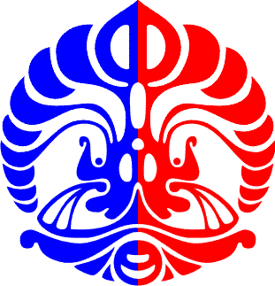

A full time CS student, part-time complainer, sometimes human-ish, Quora user.
MORELESS
Fasilkom UI

Currently a final year cs student in Faculty of Computer Science Universitas Indonesia.
MORELESS
Final year Bachelor Degree
Spent almost 4 amazing years in the tiny-and-round campus of Faculty of Computer Science,
Universitas Indonesia, which I believe is the top-notch campus in the country.
My campus life is not that much of a different with other above-average student life
accross the world :p. Few things that I like the most doing during campus life :
Problem Solving
Internet thingy
and, Foreign Language!
I am Rahmat Hidayahcurrently a final year cs student in Faculty of Computer Science, Universitas Indonesia.
I’m relatively internet savvy (at least I think I am).
Feel free to give me a buzz on :